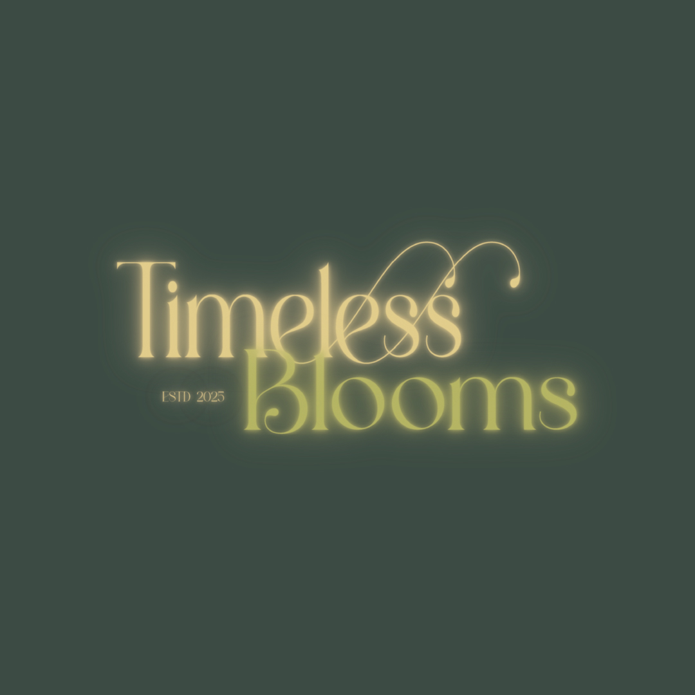
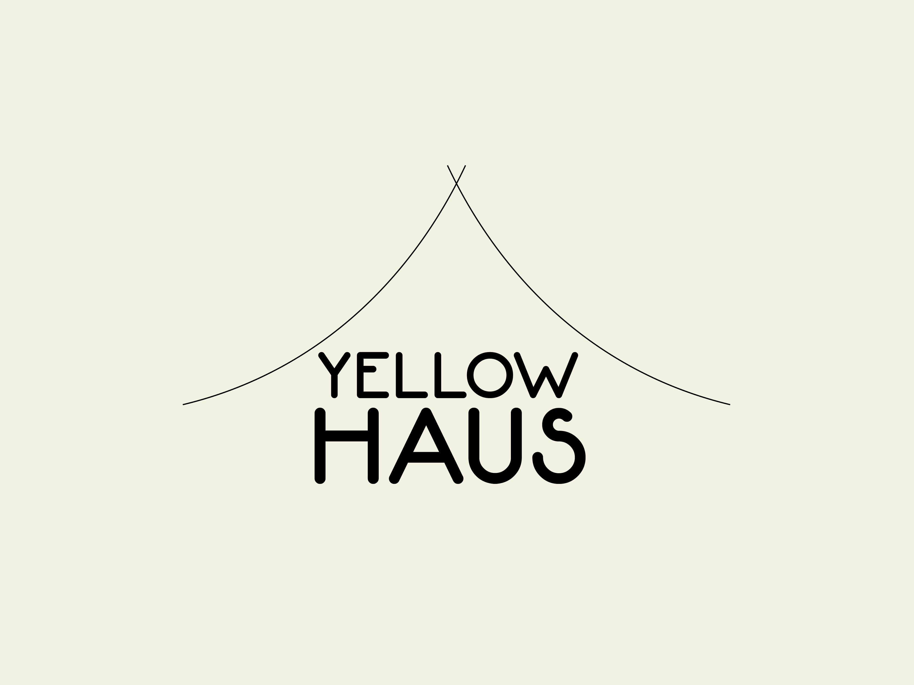
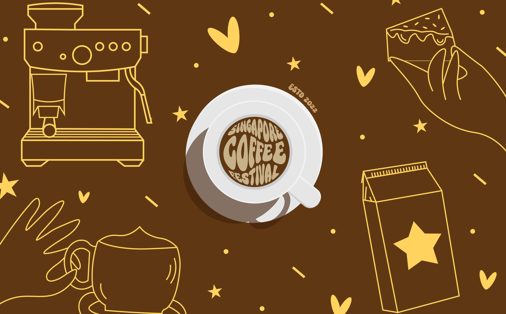
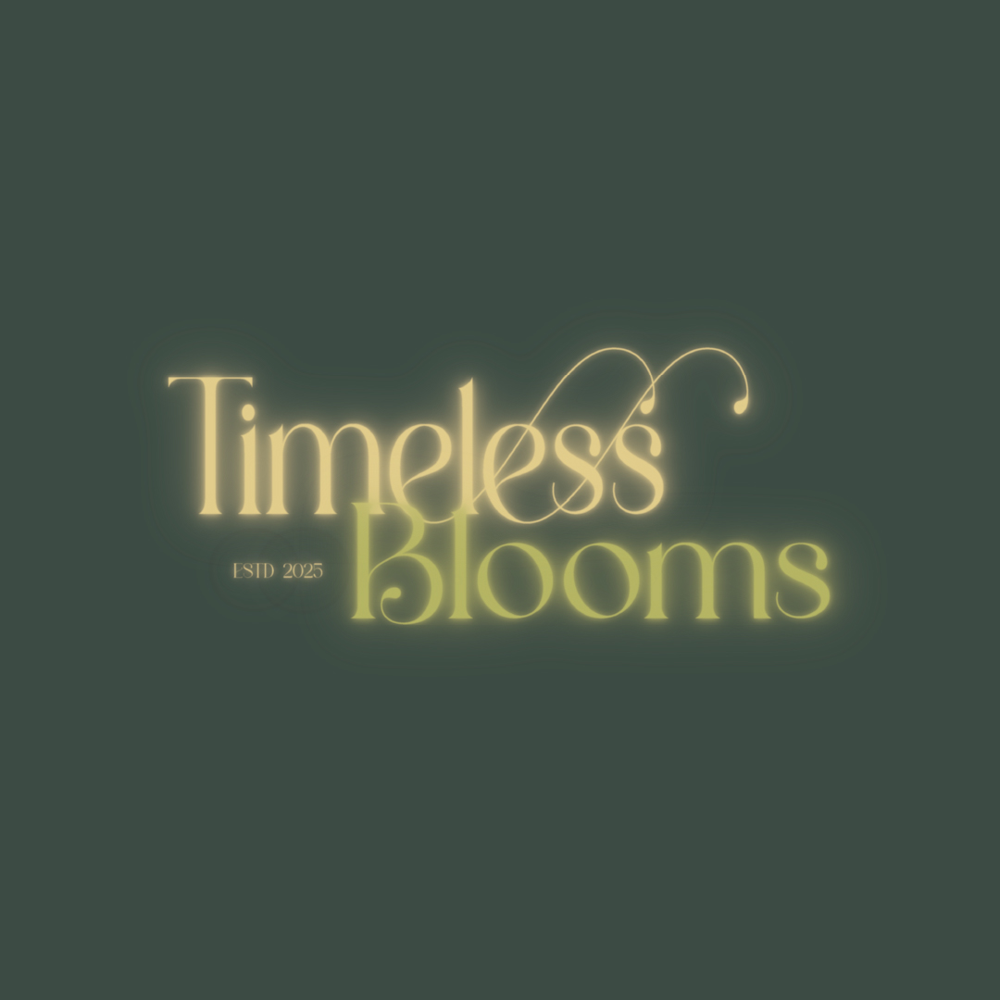
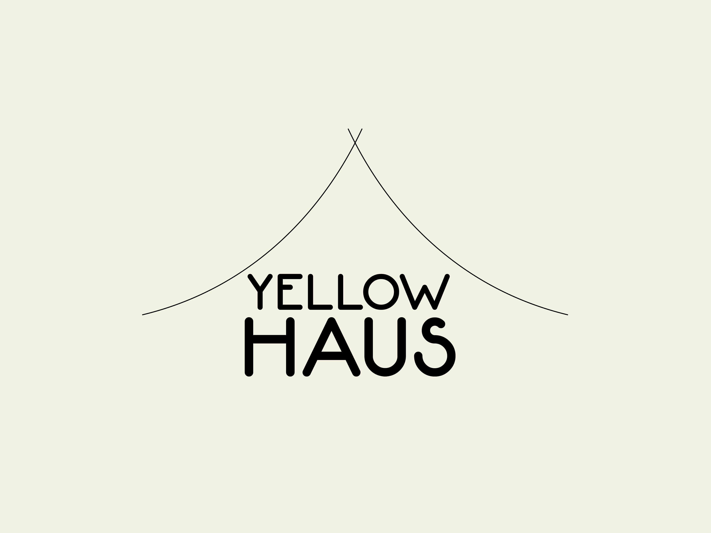
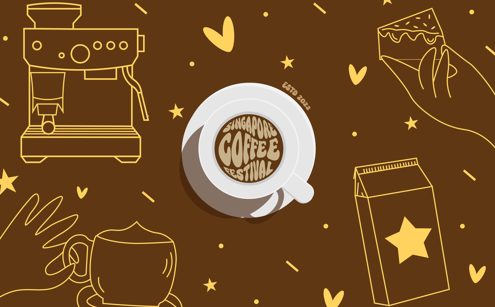

Hi, I’m Farina!
Design Student in Digital Commerce & Experience.
Exploring the intersection of creativity, technology, and user experience.
Gallery →
Design Student in Digital Commerce & Experience.
Exploring the intersection of creativity, technology, and user experience.


From the start of my tertiary education, I have been immersed in IT, with a focus on coding and UI/UX. Over time, I discovered that what excites me most is the design aspect—bringing interfaces to life and shaping how users interact with applications and websites. This passion has inspired me to pursue a career in UI/UX, where I can combine creativity with functionality.
I particularly enjoy the process of envisioning how a design should look and feel, as it gives me a sense of fulfillment and satisfaction. While I am still exploring and refining my personal style, I find myself naturally drawn toward minimalism. At the same time, I am eager to challenge myself further by mastering more dynamic and maximalist approaches in the future.
 




